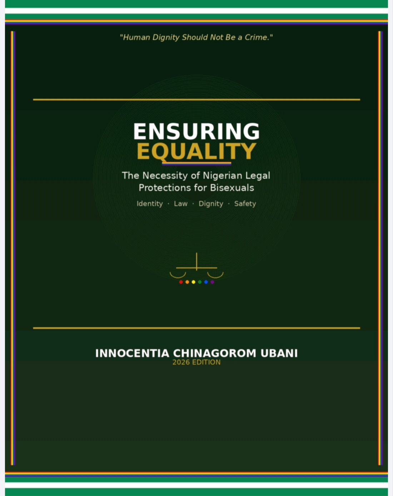

01
International Criminal Court
I will ask the Office of the Prosecutor to investigate Nigeria's systemic targeting of sexual minorities as a potential Crime Against Humanity.
RESISTING THE LINES OF THE LAW
The Bisexual Experience and Nigeria's Practical Landscape
An exploration of bisexuality, identity, and the legal implications and consequences experienced within the Nigerian landscape.
THE BOOK
The Bisexual Experience and Nigeria's Practical Landscape

IDENTITY • EXPERIENCE • LAW
Unseen Realities explores the experience of bisexuality and the realities of navigating identity within Nigeria.
The book considers the social and legal environment surrounding bisexual people, examining the implications, consequences, challenges and experiences that can remain unseen.
It seeks to place these realities within a practical Nigerian context and encourage deeper consideration of identity, dignity, rights and the human experience.
THE AUTHOR'S POSITION
Over the coming days, I will formally petition three major international bodies concerning the treatment and legal position of sexual minorities in Nigeria.
I will ask the Office of the Prosecutor to investigate Nigeria's systemic targeting of sexual minorities as a potential Crime Against Humanity.
I will bring this matter forward to challenge domestic laws that breach continental human rights standards under the African Charter.
I will file an individual communication detailing how Nigeria is violating the International Covenant on Civil and Political Rights (ICCPR).
A CALL FOR ACCOUNTABILITY
“Targeting people for who they are and who they love violates international law.”
Those responsible for enforcing policies that enable discrimination and persecution must face individual accountability.
BEGIN READING
Explore Unseen Realities: The Bisexual Experience and Nigeria's Practical Landscape by Innocentia Chinagorom Ubani.
Read the Book